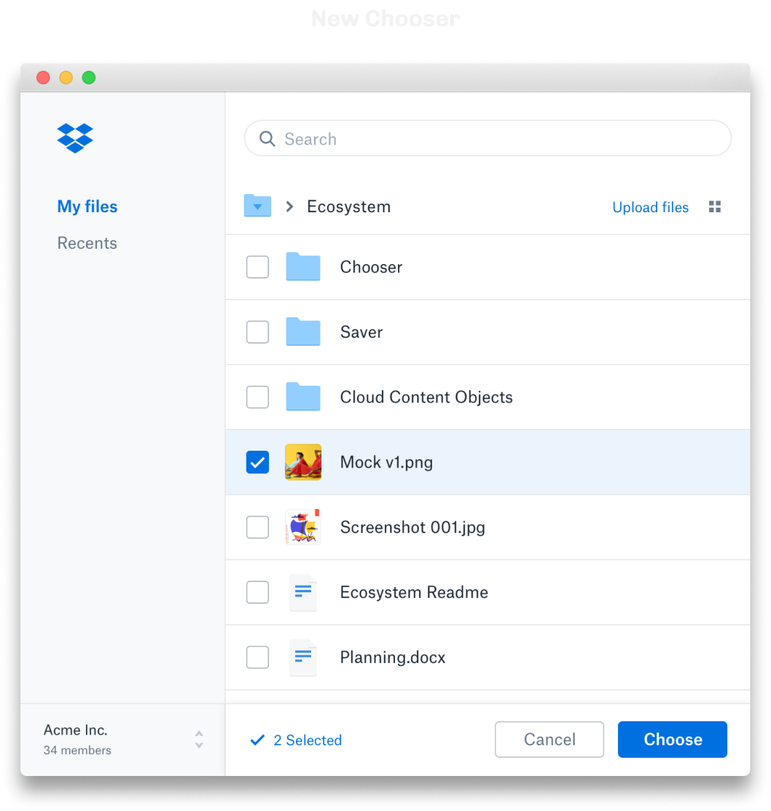
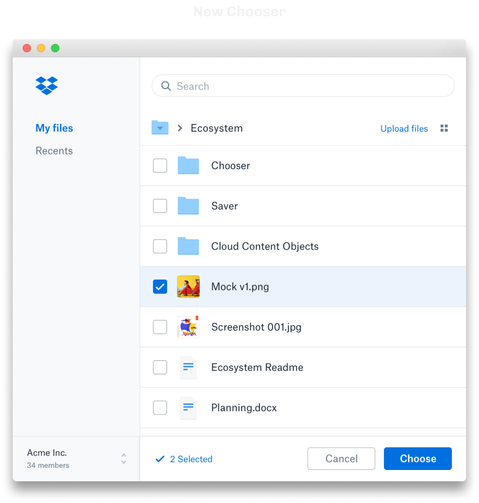

The Chooser and Saver are critical pieces of architecture in Dropbox's strategy to become a thriving ecosystem. It's the connective tissue that developers use to grant their customers the functionality to securely choose and save files stored in Dropbox.

 
